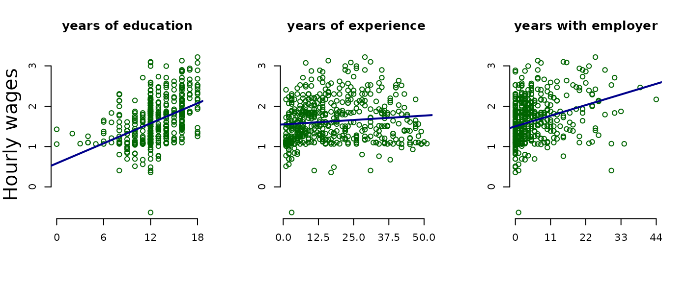

Introductory Econometrics Examples
Justin M Shea
Introductory-Econometrics-Examples.RmdIntroduction
This vignette contains examples from every chapter of Introductory Econometrics: A Modern Approach, 6e by Jeffrey M. Wooldridge. Each example illustrates how to load data, build econometric models, and compute estimates with R.
In addition, the Appendix cites good sources on using R for econometrics.
Now, install and load the wooldridge package and lets get started!
install.packages("wooldridge")library(wooldridge)Chapter 2: The Simple Regression Model
Example 2.10: A Log Wage Equation
Load the wage1 data and check out the documentation.
data("wage1")
?wage1The documentation indicates these are data from the 1976 Current Population Survey, collected by Henry Farber when he and Wooldridge were colleagues at MIT in 1988.
\(wage\): average hourly earnings
\(educ\): years of education
First, make a scatter-plot of the two variables and look for possible patterns in the relationship between them.
It appears that on average, more years of education, leads to higher wages.
The example in the text investigates what the percentage change between wages and education might be. So, we must use the \(log(\)wage\()\).
Build a linear model to estimate the relationship between the log of wage (lwage) and education (educ).
\[\widehat{log(wage)} = \beta_0 + \beta_1educ\]
log_wage_model <- lm(lwage ~ educ, data = wage1)Print the summary of the results.
summary(log_wage_model)| Dependent variable: | |
| lwage | |
| educ | 0.08274*** (0.00757) |
| Constant | 0.58377*** (0.09734) |
| Observations | 526 |
| R2 | 0.18581 |
| Adjusted R2 | 0.18425 |
| Residual Std. Error | 0.48008 (df = 524) |
| F Statistic | 119.58160*** (df = 1; 524) |
| Note: | p<0.1; p<0.05; p<0.01 |
Plot the \(log(\)wage\()\) vs educ, adding a line representing the least squares fit.

Chapter 3: Multiple Regression Analysis: Estimation
Example 3.2: Hourly Wage Equation
Check the documentation for variable information
\(lwage\): log of the average hourly earnings
\(educ\): years of education
\(exper\): years of potential experience
\(tenutre\): years with current employer
Plot the variables against lwage and compare their distributions and slope (\(\beta\)) of the simple regression lines.

Estimate the model regressing educ, exper, and tenure against log(wage).
\[\widehat{log(wage)} = \beta_0 + \beta_1educ + \beta_3exper + \beta_4tenure\]
hourly_wage_model <- lm(lwage ~ educ + exper + tenure, data = wage1)Print the estimated model coefficients:
coefficients(hourly_wage_model)| Coefficients | |
|---|---|
| (Intercept) | 0.2844 |
| educ | 0.0920 |
| exper | 0.0041 |
| tenure | 0.0221 |
Plot the coefficients, representing percentage impact of each variable on \(log(\)wage\()\) for a quick comparison.
Chapter 4: Multiple Regression Analysis: Inference
Example 4.1 Hourly Wage Equation
Using the same model estimated in example: 3.2, examine and compare the standard errors associated with each coefficient. Like the textbook, these are contained in parenthesis next to each associated coefficient.
summary(hourly_wage_model)| Dependent variable: | |
| lwage | |
| educ | 0.09203*** (0.00733) |
| exper | 0.00412** (0.00172) |
| tenure | 0.02207*** (0.00309) |
| Constant | 0.28436*** (0.10419) |
| Observations | 526 |
| R2 | 0.31601 |
| Adjusted R2 | 0.31208 |
| Residual Std. Error | 0.44086 (df = 522) |
| F Statistic | 80.39092*** (df = 3; 522) |
| Note: | p<0.1; p<0.05; p<0.01 |
For the years of experience variable, or exper, use coefficient and Standard Error to compute the \(t\) statistic:
\[t_{exper} = \frac{0.004121}{0.001723} = 2.391\]
Fortunately, R includes \(t\) statistics in the summary of model diagnostics.
summary(hourly_wage_model)$coefficients| Estimate | Std. Error | t value | Pr(>|t|) | |
|---|---|---|---|---|
| (Intercept) | 0.28436 | 0.10419 | 2.72923 | 0.00656 |
| educ | 0.09203 | 0.00733 | 12.55525 | 0.00000 |
| exper | 0.00412 | 0.00172 | 2.39144 | 0.01714 |
| tenure | 0.02207 | 0.00309 | 7.13307 | 0.00000 |
Plot the \(t\) statistics for a visual comparison:

Example 4.7 Effect of Job Training on Firm Scrap Rates
Load the jtrain data set.
data("jtrain")From H. Holzer, R. Block, M. Cheatham, and J. Knott (1993), Are Training Subsidies Effective? The Michigan Experience, Industrial and Labor Relations Review 46, 625-636. The authors kindly provided the data.
\(year:\) 1987, 1988, or 1989
\(union:\) =1 if unionized
\(lscrap:\) Log(scrap rate per 100 items)
\(hrsemp:\) (total hours training) / (total employees trained)
\(lsales:\) Log(annual sales, $)
\(lemploy:\) Log(umber of employees at plant)
First, use the subset function and it’s argument by the same name to return observations which occurred in 1987 and are not union. At the same time, use the select argument to return only the variables of interest for this problem.
jtrain_subset <- subset(jtrain, subset = (year == 1987 & union == 0),
select = c(year, union, lscrap, hrsemp, lsales, lemploy))Next, test for missing values. One can “eyeball” these with R Studio’s View function, but a more precise approach combines the sum and is.na functions to return the total number of observations equal to NA.
sum(is.na(jtrain_subset))## [1] 156While R’s lm function will automatically remove missing NA values, eliminating these manually will produce more clearly proportioned graphs for exploratory analysis. Call the na.omit function to remove all missing values and assign the new data.frame object the name jtrain_clean.
jtrain_clean <- na.omit(jtrain_subset)Use jtrain_clean to plot the variables of interest against lscrap. Visually observe the respective distributions for each variable, and compare the slope (\(\beta\)) of the simple regression lines.

Now create the linear model regressing hrsemp(total hours training/total employees trained), the lsales(log of annual sales), and lemploy(the log of the number of the employees), against lscrap(the log of the scrape rate).
\[lscrap = \alpha + \beta_1 hrsemp + \beta_2 lsales + \beta_3 lemploy\]
linear_model <- lm(lscrap ~ hrsemp + lsales + lemploy, data = jtrain_clean)Finally, print the complete summary diagnostics of the model.
summary(linear_model)| Dependent variable: | |
| lscrap | |
| hrsemp | -0.02927 (0.02280) |
| lsales | -0.96203** (0.45252) |
| lemploy | 0.76147* (0.40743) |
| Constant | 12.45837** (5.68677) |
| Observations | 29 |
| R2 | 0.26243 |
| Adjusted R2 | 0.17392 |
| Residual Std. Error | 1.37604 (df = 25) |
| F Statistic | 2.96504* (df = 3; 25) |
| Note: | p<0.1; p<0.05; p<0.01 |
Chapter 5: Multiple Regression Analysis: OLS Asymptotics
Example 5.1: Housing Prices and Distance From an Incinerator
Load the hprice3 data set.
data("hprice3")\(lprice:\) Log(selling price)
\(ldist:\) Log(distance from house to incinerator, feet)
\(larea:\) Log(square footage of house)
Graph the prices of housing against distance from an incinerator:
Next, model the \(log(\)price\()\) against the \(log(\)dist\()\) to estimate the percentage relationship between the two.
\[price = \alpha + \beta_1 dist\]
price_dist_model <- lm(lprice ~ ldist, data = hprice3)Create another model that controls for “quality” variables, such as square footage area per house.
\[price = \alpha + \beta_1 dist + \beta_2 area\]
price_area_model <- lm(lprice ~ ldist + larea, data = hprice3)Compare the coefficients of both models. Notice that adding area improves the quality of the model, but also reduces the coefficient size of dist.
summary(price_dist_model)
summary(price_area_model)| Dependent variable: | ||
| lprice | ||
| (1) | (2) | |
| ldist | 0.31722*** (0.04811) | 0.19623*** (0.03816) |
| larea | 0.78368*** (0.05358) | |
| Constant | 8.25750*** (0.47383) | 3.49394*** (0.49065) |
| Observations | 321 | 321 |
| R2 | 0.11994 | 0.47385 |
| Adjusted R2 | 0.11718 | 0.47054 |
| Residual Std. Error | 0.41170 (df = 319) | 0.31883 (df = 318) |
| F Statistic | 43.47673*** (df = 1; 319) | 143.19470*** (df = 2; 318) |
| Note: | p<0.1; p<0.05; p<0.01 | |
Graphing illustrates the larger coefficient for area.

Chapter 6: Multiple Regression: Further Issues
Example 6.1: Effects of Pollution on Housing Prices, standardized.
Load the hprice2 data and view the documentation.
data("hprice2")
?hprice2Data from Hedonic Housing Prices and the Demand for Clean Air, by Harrison, D. and D.L.Rubinfeld, Journal of Environmental Economics and Management 5, 81-102. Diego Garcia, a former Ph.D. student in economics at MIT, kindly provided these data, which he obtained from the book Regression Diagnostics: Identifying Influential Data and Sources of Collinearity, by D.A. Belsey, E. Kuh, and R. Welsch, 1990. New York: Wiley.
\(price\): median housing price.
\(nox\): Nitrous Oxide concentration; parts per million.
\(crime\): number of reported crimes per capita.
\(rooms\): average number of rooms in houses in the community.
\(dist\): weighted distance of the community to 5 employment centers.
\(stratio\): average student-teacher ratio of schools in the community.
\[price = \beta_0 + \beta_1nox + \beta_2crime + \beta_3rooms + \beta_4dist + \beta_5stratio + \mu\]
Estimate the usual lm model.
housing_level <- lm(price ~ nox + crime + rooms + dist + stratio, data = hprice2)Estimate the same model, but standardized coefficients by wrapping each variable with R’s scale function:
\[\widehat{zprice} = \beta_1znox + \beta_2zcrime + \beta_3zrooms + \beta_4zdist + \beta_5zstratio\]
housing_standardized <- lm(scale(price) ~ 0 + scale(nox) + scale(crime) + scale(rooms) + scale(dist) + scale(stratio), data = hprice2)Compare results, and observe
summary(housing_level)
summary(housing_standardized)| Dependent variable: | ||
| price | scale(price) | |
| (1) | (2) | |
| nox | -2,706.43300*** (354.08690) | |
| crime | -153.60100*** (32.92883) | |
| rooms | 6,735.49800*** (393.60370) | |
| dist | -1,026.80600*** (188.10790) | |
| stratio | -1,149.20400*** (127.42870) | |
| scale(nox) | -0.34045*** (0.04450) | |
| scale(crime) | -0.14328*** (0.03069) | |
| scale(rooms) | 0.51389*** (0.03000) | |
| scale(dist) | -0.23484*** (0.04298) | |
| scale(stratio) | -0.27028*** (0.02994) | |
| Constant | 20,871.13000*** (5,054.59900) | |
| Observations | 506 | 506 |
| R2 | 0.63567 | 0.63567 |
| Adjusted R2 | 0.63202 | 0.63203 |
| Residual Std. Error | 5,586.19800 (df = 500) | 0.60601 (df = 501) |
| F Statistic | 174.47330*** (df = 5; 500) | 174.82220*** (df = 5; 501) |
| Note: | p<0.1; p<0.05; p<0.01 | |
Example 6.2: Effects of Pollution on Housing Prices, Quadratic Interactive Term
Modify the housing model from example 4.5, adding a quadratic term in rooms:
\[log(price) = \beta_0 + \beta_1log(nox) + \beta_2log(dist) + \beta_3rooms + \beta_4rooms^2 + \beta_5stratio + \mu\]
housing_model_4.5 <- lm(lprice ~ lnox + log(dist) + rooms + stratio, data = hprice2)
housing_model_6.2 <- lm(lprice ~ lnox + log(dist) + rooms + I(rooms^2) + stratio,
data = hprice2)Compare the results with the model from example 6.1.
summary(housing_model_4.5)
summary(housing_model_6.2)| Dependent variable: | ||
| lprice | ||
| (1) | (2) | |
| lnox | -0.95354*** (0.11674) | -0.90168*** (0.11469) |
| log(dist) | -0.13434*** (0.04310) | -0.08678** (0.04328) |
| rooms | 0.25453*** (0.01853) | -0.54511*** (0.16545) |
| I(rooms2) | 0.06226*** (0.01280) | |
| stratio | -0.05245*** (0.00590) | -0.04759*** (0.00585) |
| Constant | 11.08386*** (0.31811) | 13.38548*** (0.56647) |
| Observations | 506 | 506 |
| R2 | 0.58403 | 0.60281 |
| Adjusted R2 | 0.58071 | 0.59884 |
| Residual Std. Error | 0.26500 (df = 501) | 0.25921 (df = 500) |
| F Statistic | 175.85520*** (df = 4; 501) | 151.77040*** (df = 5; 500) |
| Note: | p<0.1; p<0.05; p<0.01 | |
Estimate the minimum turning point at which the rooms interactive term changes from negative to positive.
\[x = \frac{\hat{\beta_1}}{2\hat{\beta_2}}\]
beta_1 <- summary(housing_model_6.2)$coefficients["rooms",1]
beta_2 <- summary(housing_model_6.2)$coefficients["I(rooms^2)",1]
turning_point <- abs(beta_1 / (2*beta_2))
print(turning_point)## [1] 4.37763Compute the percent change across a range of average rooms. Include the smallest, turning point, and largest.
Rooms <- c(min(hprice2$rooms), 4, turning_point, 5, 5.5, 6.45, 7.5, max(hprice2$rooms))
Percent.Change <- 100*(beta_1 + 2*beta_2*Rooms)
kable(data.frame(Rooms, Percent.Change))| Rooms | Percent.Change |
|---|---|
| 3.56000 | -10.181324 |
| 4.00000 | -4.702338 |
| 4.37763 | 0.000000 |
| 5.00000 | 7.749903 |
| 5.50000 | 13.976023 |
| 6.45000 | 25.805651 |
| 7.50000 | 38.880503 |
| 8.78000 | 54.819367 |
Graph the log of the selling price against the number of rooms. Superimpose a simple model as well as a quadratic model and examine the difference.

Chapter 7: Multiple Regression Analysis with Qualitative Information
Example 7.4: Housing Price Regression, Qualitative Binary variable
This time, use the hrprice1 data.
data("hprice1")Data collected from the real estate pages of the Boston Globe during 1990. These are homes that sold in the Boston, MA area.
\(lprice:\) Log(house price, $1000s)
\(llotsize:\) Log(size of lot in square feet)
\(lsqrft:\) Log(size of house in square feet)
\(bdrms:\) number of bdrms
\(colonial:\) =1 if home is colonial style
\[\widehat{log(price)} = \beta_0 + \beta_1log(lotsize) + \beta_2log(sqrft) + \beta_3bdrms + \beta_4colonial \]
Estimate the coefficients of the above linear model on the hprice data set.
housing_qualitative <- lm(lprice ~ llotsize + lsqrft + bdrms + colonial, data = hprice1)summary(housing_qualitative)| Dependent variable: | |
| lprice | |
| llotsize | 0.16782*** (0.03818) |
| lsqrft | 0.70719*** (0.09280) |
| bdrms | 0.02683 (0.02872) |
| colonial | 0.05380 (0.04477) |
| Constant | -1.34959** (0.65104) |
| Observations | 88 |
| R2 | 0.64907 |
| Adjusted R2 | 0.63216 |
| Residual Std. Error | 0.18412 (df = 83) |
| F Statistic | 38.37846*** (df = 4; 83) |
| Note: | p<0.1; p<0.05; p<0.01 |
Chapter 8: Heteroskedasticity
Example 8.9: Determinants of Personal Computer Ownership
\[\widehat{PC} = \beta_0 + \beta_1hsGPA + \beta_2ACT + \beta_3parcoll + \beta_4colonial \] Christopher Lemmon, a former MSU undergraduate, collected these data from a survey he took of MSU students in Fall 1994. Load gpa1 and create a new variable combining the fathcoll and mothcoll, into parcoll. This new column indicates if either parent went to college.
data("gpa1")
gpa1$parcoll <- as.integer(gpa1$fathcoll==1 | gpa1$mothcoll)
GPA_OLS <- lm(PC ~ hsGPA + ACT + parcoll, data = gpa1)Calculate the weights and then pass them to the weights argument.
weights <- GPA_OLS$fitted.values * (1-GPA_OLS$fitted.values)
GPA_WLS <- lm(PC ~ hsGPA + ACT + parcoll, data = gpa1, weights = 1/weights)Compare the OLS and WLS model in the table below:
| Dependent variable: | ||
| PC | ||
| (1) | (2) | |
| hsGPA | 0.06539 (0.13726) | 0.03270 (0.12988) |
| ACT | 0.00056 (0.01550) | 0.00427 (0.01545) |
| parcoll | 0.22105** (0.09296) | 0.21519** (0.08629) |
| Constant | -0.00043 (0.49054) | 0.02621 (0.47665) |
| Observations | 141 | 141 |
| R2 | 0.04153 | 0.04644 |
| Adjusted R2 | 0.02054 | 0.02556 |
| Residual Std. Error (df = 137) | 0.48599 | 1.01624 |
| F Statistic (df = 3; 137) | 1.97851 | 2.22404* |
| Note: | p<0.1; p<0.05; p<0.01 | |
Chapter 9: More on Specification and Data Issues
Example 9.8: R&D Intensity and Firm Size
\[rdintens = \beta_0 + \beta_1sales + \beta_2profmarg + \mu\]
From Businessweek R&D Scoreboard, October 25, 1991. Load the data and estimate the model.
data("rdchem")
all_rdchem <- lm(rdintens ~ sales + profmarg, data = rdchem)Plotting the data reveals the outlier on the far right of the plot, which will skew the results of our model.
So, we can estimate the model without that data point to gain a better understanding of how sales and profmarg describe rdintens for most firms. We can use the subset argument of the linear model function to indicate that we only want to estimate the model using data that is less than the highest sales.
smallest_rdchem <- lm(rdintens ~ sales + profmarg, data = rdchem,
subset = (sales < max(sales)))The table below compares the results of both models side by side. By removing the outlier firm, \(sales\) become a more significant determination of R&D expenditures.
| Dependent variable: | ||
| rdintens | ||
| (1) | (2) | |
| sales | 0.00005 (0.00004) | 0.00019** (0.00008) |
| profmarg | 0.04462 (0.04618) | 0.04784 (0.04448) |
| Constant | 2.62526*** (0.58553) | 2.29685*** (0.59180) |
| Observations | 32 | 31 |
| R2 | 0.07612 | 0.17281 |
| Adjusted R2 | 0.01240 | 0.11372 |
| Residual Std. Error | 1.86205 (df = 29) | 1.79218 (df = 28) |
| F Statistic | 1.19465 (df = 2; 29) | 2.92476* (df = 2; 28) |
| Note: | p<0.1; p<0.05; p<0.01 | |
Chapter 10: Basic Regression Analysis with Time Series Data
Example 10.2: Effects of Inflation and Deficits on Interest Rates
\[\widehat{i3} = \beta_0 + \beta_1inf_t + \beta_2def_t\] Data from the Economic Report of the President, 2004, Tables B-64, B-73, and B-79.
data("intdef")
tbill_model <- lm(i3 ~ inf + def, data = intdef)| Dependent variable: | |
| i3 | |
| inf | 0.60587*** (0.08213) |
| def | 0.51306*** (0.11838) |
| Constant | 1.73327*** (0.43197) |
| Observations | 56 |
| R2 | 0.60207 |
| Adjusted R2 | 0.58705 |
| Residual Std. Error | 1.84316 (df = 53) |
| F Statistic | 40.09424*** (df = 2; 53) |
| Note: | p<0.1; p<0.05; p<0.01 |
Example 10.11: Seasonal Effects of Antidumping Filings
C.M. Krupp and P.S. Pollard (1999), Market Responses to Antidumpting Laws: Some Evidence from the U.S. Chemical Industry, Canadian Journal of Economics 29, 199-227. Dr. Krupp kindly provided the data. They are monthly data covering February 1978 through December 1988.
data("barium")
barium_imports <- lm(lchnimp ~ lchempi + lgas + lrtwex + befile6 + affile6 + afdec6, data = barium)Estimate a new model, barium_seasonal which accounts for seasonality by adding dummy variables contained in the data.
barium_seasonal <- lm(lchnimp ~ lchempi + lgas + lrtwex + befile6 + affile6 + afdec6 + feb + mar + apr + may + jun + jul + aug + sep + oct + nov + dec, data = barium)Compare both models:
| Dependent variable: | ||
| lchnimp | ||
| (1) | (2) | |
| lchempi | 3.11719*** (0.47920) | 3.26506*** (0.49293) |
| lgas | 0.19635 (0.90662) | -1.27812 (1.38901) |
| lrtwex | 0.98302** (0.40015) | 0.66305 (0.47130) |
| befile6 | 0.05957 (0.26097) | 0.13970 (0.26681) |
| affile6 | -0.03241 (0.26430) | 0.01263 (0.27869) |
| afdec6 | -0.56524* (0.28584) | -0.52130* (0.30195) |
| feb | -0.41771 (0.30444) | |
| mar | 0.05905 (0.26473) | |
| apr | -0.45148* (0.26839) | |
| may | 0.03331 (0.26924) | |
| jun | -0.20633 (0.26925) | |
| jul | 0.00384 (0.27877) | |
| aug | -0.15707 (0.27799) | |
| sep | -0.13416 (0.26766) | |
| oct | 0.05169 (0.26685) | |
| nov | -0.24626 (0.26283) | |
| dec | 0.13284 (0.27142) | |
| Constant | -17.80300 (21.04537) | 16.77877 (32.42865) |
| Observations | 131 | 131 |
| R2 | 0.30486 | 0.35833 |
| Adjusted R2 | 0.27123 | 0.26179 |
| Residual Std. Error | 0.59735 (df = 124) | 0.60121 (df = 113) |
| F Statistic | 9.06365*** (df = 6; 124) | 3.71190*** (df = 17; 113) |
| Note: | p<0.1; p<0.05; p<0.01 | |
Now, compute the anova between the two models.
barium_anova <- anova(barium_imports, barium_seasonal)| Statistic | N | Mean | St. Dev. | Min | Pctl(25) | Pctl(75) | Max |
| Res.Df | 2 | 118.50000 | 7.77817 | 113 | 115.8 | 121.2 | 124 |
| RSS | 2 | 42.54549 | 2.40642 | 40.84390 | 41.69469 | 43.39629 | 44.24709 |
| Df | 1 | 11.00000 | 11.00000 | 11.00000 | 11.00000 | 11.00000 | |
| Sum of Sq | 1 | 3.40319 | 3.40319 | 3.40319 | 3.40319 | 3.40319 | |
| F | 1 | 0.85594 | 0.85594 | 0.85594 | 0.85594 | 0.85594 | |
| Pr(> F) | 1 | 0.58520 | 0.58520 | 0.58520 | 0.58520 | 0.58520 | |
Chapter 11: Further Issues in Using OLS with with Time Series Data
Example 11.7: Wages and Productivity
\[\widehat{log(hrwage_t)} = \beta_0 + \beta_1log(outphr_t) + \beta_2t + \mu_t\] Data from the Economic Report of the President, 1989, Table B-47. The data are for the non-farm business sector.
data("earns")
wage_time <- lm(lhrwage ~ loutphr + t, data = earns)wage_diff <- lm(diff(lhrwage) ~ diff(loutphr), data = earns)| Dependent variable: | ||
| lhrwage | diff(lhrwage) | |
| (1) | (2) | |
| loutphr | 1.63964*** (0.09335) | |
| t | -0.01823*** (0.00175) | |
| diff(loutphr) | 0.80932*** (0.17345) | |
| Constant | -5.32845*** (0.37445) | -0.00366 (0.00422) |
| Observations | 41 | 40 |
| R2 | 0.97122 | 0.36424 |
| Adjusted R2 | 0.96971 | 0.34750 |
| Residual Std. Error (df = 38) | 0.02854 | 0.01695 |
| F Statistic | 641.22430*** (df = 2; 38) | 21.77054*** (df = 1; 38) |
| Note: | p<0.1; p<0.05; p<0.01 | |
Chapter 12: Serial Correlation and Heteroskedasticiy in Time Series Regressions
Example 12.4: Prais-Winsten Estimation in the Event Study
data("barium")
barium_model <- lm(lchnimp ~ lchempi + lgas + lrtwex + befile6 + affile6 + afdec6,
data = barium)Load the prais package, use the prais_winsten function to estimate.
library(prais)
barium_prais_winsten <- prais_winsten(lchnimp ~ lchempi + lgas + lrtwex + befile6 + affile6 + afdec6, data = barium)## Iteration 0: rho = 0
## Iteration 1: rho = 0.2708
## Iteration 2: rho = 0.291
## Iteration 3: rho = 0.293
## Iteration 4: rho = 0.2932
## Iteration 5: rho = 0.2932
## Iteration 6: rho = 0.2932
## Iteration 7: rho = 0.2932| Dependent variable: | |
| lchnimp | |
| lchempi | 3.11719*** (0.47920) |
| lgas | 0.19635 (0.90662) |
| lrtwex | 0.98302** (0.40015) |
| befile6 | 0.05957 (0.26097) |
| affile6 | -0.03241 (0.26430) |
| afdec6 | -0.56524* (0.28584) |
| Constant | -17.80300 (21.04537) |
| Observations | 131 |
| R2 | 0.30486 |
| Adjusted R2 | 0.27123 |
| Residual Std. Error | 0.59735 (df = 124) |
| F Statistic | 9.06365*** (df = 6; 124) |
| Note: | p<0.1; p<0.05; p<0.01 |
barium_prais_winsten##
## Call:
## prais_winsten(formula = lchnimp ~ lchempi + lgas + lrtwex + befile6 +
## affile6 + afdec6, data = barium)
##
## Coefficients:
## (Intercept) lchempi lgas lrtwex befile6
## -37.07770 2.94095 1.04638 1.13279 -0.01648
## affile6 afdec6
## -0.03316 -0.57681
##
## AR(1) Coefficient rho: 0.2932
Example 12.8: Heteroskedasticity and the Efficient Markets Hypothesis
These are Wednesday closing prices of value-weighted NYSE average, available in many publications. Wooldridge does not recall the particular source used when he collected these data at MIT, but notes probably the easiest way to get similar data is to go to the NYSE web site, www.nyse.com.
\[return_t = \beta_0 + \beta_1return_{t-1} + \mu_t\]
data("nyse")
?nyse return_AR1 <-lm(return ~ return_1, data = nyse)\[\hat{\mu^2_t} = \beta_0 + \beta_1return_{t-1} + residual_t\]
return_mu <- residuals(return_AR1)
mu2_hat_model <- lm(return_mu^2 ~ return_1, data = return_AR1$model)| Dependent variable: | ||
| return | return_mu2 | |
| (1) | (2) | |
| return_1 | 0.05890 (0.03802) | -1.10413*** (0.20140) |
| Constant | 0.17963** (0.08074) | 4.65650*** (0.42768) |
| Observations | 689 | 689 |
| R2 | 0.00348 | 0.04191 |
| Adjusted R2 | 0.00203 | 0.04052 |
| Residual Std. Error (df = 687) | 2.11040 | 11.17847 |
| F Statistic (df = 1; 687) | 2.39946 | 30.05460*** |
| Note: | p<0.1; p<0.05; p<0.01 | |
Example 12.9: ARCH in Stock Returns
\[\hat{\mu^2_t} = \beta_0 + \hat{\mu^2_{t-1}} + residual_t\]
We still have return_mu in the working environment so we can use it to create \(\hat{\mu^2_t}\), (mu2_hat) and \(\hat{\mu^2_{t-1}}\) (mu2_hat_1). Notice the use R’s matrix subset operations to perform the lag operation. We drop the first observation of mu2_hat and squared the results. Next, we remove the last observation of mu2_hat_1 using the subtraction operator combined with a call to the NROW function on return_mu. Now, both contain \(688\) observations and we can estimate a standard linear model.
mu2_hat <- return_mu[-1]^2
mu2_hat_1 <- return_mu[-NROW(return_mu)]^2
arch_model <- lm(mu2_hat ~ mu2_hat_1)| Dependent variable: | |
| mu2_hat | |
| mu2_hat_1 | 0.33706*** (0.03595) |
| Constant | 2.94743*** (0.44023) |
| Observations | 688 |
| R2 | 0.11361 |
| Adjusted R2 | 0.11231 |
| Residual Std. Error | 10.75907 (df = 686) |
| F Statistic | 87.92263*** (df = 1; 686) |
| Note: | p<0.1; p<0.05; p<0.01 |
Chapter 13: Pooling Cross Sections across Time: Simple Panel Data Methods
Example 13.7: Effect of Drunk Driving Laws on Traffic Fatalities
Wooldridge collected these data from two sources, the 1992 Statistical Abstract of the United States (Tables 1009, 1012) and A Digest of State Alcohol-Highway Safety Related Legislation, 1985 and 1990, published by the U.S. National Highway Traffic Safety Administration. \[\widehat{\Delta{dthrte}} = \beta_0 + \Delta{open} + \Delta{admin}\]
data("traffic1")
?traffic1DD_model <- lm(cdthrte ~ copen + cadmn, data = traffic1)| Dependent variable: | |
| cdthrte | |
| copen | -0.41968** (0.20559) |
| cadmn | -0.15060 (0.11682) |
| Constant | -0.49679*** (0.05243) |
| Observations | 51 |
| R2 | 0.11867 |
| Adjusted R2 | 0.08194 |
| Residual Std. Error | 0.34350 (df = 48) |
| F Statistic | 3.23144** (df = 2; 48) |
| Note: | p<0.1; p<0.05; p<0.01 |
Chapter 14: Advanced Panel Data Methods
Example 14.1: Effect of Job Training on Firm Scrap Rates
In this section, we will estimate a linear panel model using the plm function from the plm: Linear Models for Panel Data package. See the bibliography for more information.
library(plm)
data("jtrain")
scrap_panel <- plm(lscrap ~ d88 + d89 + grant + grant_1, data = jtrain,
index = c('fcode','year'), model = 'within', effect ='individual')| Dependent variable: | |
| lscrap | |
| d88 | -0.08022 (0.10948) |
| d89 | -0.24720* (0.13322) |
| grant | -0.25231* (0.15063) |
| grant_1 | -0.42159** (0.21020) |
| Observations | 162 |
| R2 | 0.20105 |
| Adjusted R2 | -0.23684 |
| F Statistic | 6.54259*** (df = 4; 104) |
| Note: | p<0.1; p<0.05; p<0.01 |
Chapter 15: Instrumental Variables Estimation and Two Stage Least Squares
Example 15.1: Estimating the Return to Education for Married Women
T.A. Mroz (1987), The Sensitivity of an Empirical Model of Married Women’s Hours of Work to Economic and Statistical Assumptions, Econometrica 55, 765-799. Professor Ernst R. Berndt, of MIT, kindly provided the data, which he obtained from Professor Mroz.
\[log(wage) = \beta_0 + \beta_1educ + \mu\]
data("mroz")
?mrozwage_educ_model <- lm(lwage ~ educ, data = mroz)\[\widehat{educ} = \beta_0 + \beta_1fatheduc\]
We run the typical linear model, but notice the use of the subset argument. inlf is a binary variable in which a value of 1 means they are “In the Labor Force”. By sub-setting the mroz data.frame by observations in which inlf==1, only working women will be in the sample.
fatheduc_model <- lm(educ ~ fatheduc, data = mroz, subset = (inlf==1))In this section, we will perform an Instrumental-Variable Regression, using the ivreg function in the AER (Applied Econometrics with R) package. See the bibliography for more information.
library("AER")
wage_educ_IV <- ivreg(lwage ~ educ | fatheduc, data = mroz)| Dependent variable: | |||
| lwage | educ | lwage | |
| OLS | OLS | instrumental | |
| variable | |||
| (1) | (2) | (3) | |
| educ | 0.10865*** (0.01440) | 0.05917* (0.03514) | |
| fatheduc | 0.26944*** (0.02859) | ||
| Constant | -0.18520 (0.18523) | 10.23705*** (0.27594) | 0.44110 (0.44610) |
| Observations | 428 | 428 | 428 |
| R2 | 0.11788 | 0.17256 | 0.09344 |
| Adjusted R2 | 0.11581 | 0.17062 | 0.09131 |
| Residual Std. Error (df = 426) | 0.68003 | 2.08130 | 0.68939 |
| F Statistic (df = 1; 426) | 56.92892*** | 88.84076*** | |
| Note: | p<0.1; p<0.05; p<0.01 | ||
Example 15.2: Estimating the Return to Education for Men
Data from M. Blackburn and D. Neumark (1992), Unobserved Ability, Efficiency Wages, and Interindustry Wage Differentials, Quarterly Journal of Economics 107, 1421-1436. Professor Neumark kindly provided the data, of which Wooldridge uses the data for 1980.
\[\widehat{educ} = \beta_0 + sibs\]
data("wage2")
?wage2educ_sibs_model <- lm(educ ~ sibs, data = wage2)\[\widehat{log(wage)} = \beta_0 + educ\]
Again, estimate the model using the ivreg function in the AER (Applied Econometrics with R) package.
library("AER")
educ_sibs_IV <- ivreg(lwage ~ educ | sibs, data = wage2)| Dependent variable: | |||
| educ | lwage | ||
| OLS | instrumental | ||
| variable | |||
| (1) | (2) | (3) | |
| sibs | -0.22792*** (0.03028) | ||
| educ | 0.12243*** (0.02635) | 0.05917* (0.03514) | |
| Constant | 14.13879*** (0.11314) | 5.13003*** (0.35517) | 0.44110 (0.44610) |
| Observations | 935 | 935 | 428 |
| R2 | 0.05726 | -0.00917 | 0.09344 |
| Adjusted R2 | 0.05625 | -0.01026 | 0.09131 |
| Residual Std. Error | 2.13398 (df = 933) | 0.42330 (df = 933) | 0.68939 (df = 426) |
| F Statistic | 56.66715*** (df = 1; 933) | ||
| Note: | p<0.1; p<0.05; p<0.01 | ||
Example 15.5: Return to Education for Working Women
\[\widehat{log(wage)} = \beta_0 + \beta_1educ + \beta_2exper + \beta_3exper^2\]
Use the ivreg function in the AER (Applied Econometrics with R) package to estimate.
data("mroz")
wage_educ_exper_IV <- ivreg(lwage ~ educ + exper + expersq | exper + expersq + motheduc + fatheduc, data = mroz)| Dependent variable: | |
| lwage | |
| educ | 0.06140* (0.03144) |
| exper | 0.04417*** (0.01343) |
| expersq | -0.00090** (0.00040) |
| Constant | 0.04810 (0.40033) |
| Observations | 428 |
| R2 | 0.13571 |
| Adjusted R2 | 0.12959 |
| Residual Std. Error | 0.67471 (df = 424) |
| Note: | p<0.1; p<0.05; p<0.01 |
Chapter 16: Simultaneous Equations Models
Example 16.4: INFLATION AND OPENNESS
Data from D. Romer (1993), Openness and Inflation: Theory and Evidence, Quarterly Journal of Economics 108, 869-903. The data are included in the article.
\[inf = \beta_{10} + \alpha_1open + \beta_{11}log(pcinc) + \mu_1\] \[open = \beta_{20} + \alpha_2inf + \beta_{21}log(pcinc) + \beta_{22}log(land) + \mu_2\]
Example 16.6: INFLATION AND OPENNESS
\[\widehat{open} = \beta_0 + \beta_{1}log(pcinc) + \beta_{2}log(land)\]
data("openness")
?opennessopen_model <-lm(open ~ lpcinc + lland, data = openness)\[\widehat{inf} = \beta_0 + \beta_{1}open + \beta_{2}log(pcinc)\]
Use the ivreg function in the AER (Applied Econometrics with R) package to estimate.
library(AER)
inflation_IV <- ivreg(inf ~ open + lpcinc | lpcinc + lland, data = openness)| Dependent variable: | ||
| open | inf | |
| OLS | instrumental | |
| variable | ||
| (1) | (2) | |
| open | -0.33749** (0.14412) | |
| lpcinc | 0.54648 (1.49324) | 0.37582 (2.01508) |
| lland | -7.56710*** (0.81422) | |
| Constant | 117.08450*** (15.84830) | 26.89934* (15.40120) |
| Observations | 114 | 114 |
| R2 | 0.44867 | 0.03088 |
| Adjusted R2 | 0.43873 | 0.01341 |
| Residual Std. Error (df = 111) | 17.79559 | 23.83581 |
| F Statistic | 45.16537*** (df = 2; 111) | |
| Note: | p<0.1; p<0.05; p<0.01 | |
Chapter 18: Advanced Time Series Topics
Example 18.8: FORECASTING THE U.S. UNEMPLOYMENT RATE
Data from Economic Report of the President, 2004, Tables B-42 and B-64.
data("phillips")
?phillips\[\widehat{unemp_t} = \beta_0 + \beta_1unem_{t-1}\]
Estimate the linear model in the usual way and note the use of the subset argument to define data equal to and before the year 1996.
phillips_train <- subset(phillips, year <= 1996)
unem_AR1 <- lm(unem ~ unem_1, data = phillips_train)\[\widehat{unemp_t} = \beta_0 + \beta_1unem_{t-1} + \beta_2inf_{t-1}\]
unem_inf_VAR1 <- lm(unem ~ unem_1 + inf_1, data = phillips_train)| Dependent variable: | ||
| unem | ||
| (1) | (2) | |
| unem_1 | 0.73235*** (0.09689) | 0.64703*** (0.08381) |
| inf_1 | 0.18358*** (0.04118) | |
| Constant | 1.57174*** (0.57712) | 1.30380** (0.48969) |
| Observations | 48 | 48 |
| R2 | 0.55397 | 0.69059 |
| Adjusted R2 | 0.54427 | 0.67684 |
| Residual Std. Error | 1.04857 (df = 46) | 0.88298 (df = 45) |
| F Statistic | 57.13184*** (df = 1; 46) | 50.21941*** (df = 2; 45) |
| Note: | p<0.1; p<0.05; p<0.01 | |
Now, use the subset argument to create our testing data set containing observation after 1996. Next, pass the both the model object and the test set to the predict function for both models. Finally, cbind or “column bind” both forecasts as well as the year and unemployment rate of the test set.
phillips_test <- subset(phillips, year >= 1997)
AR1_forecast <- predict.lm(unem_AR1, newdata = phillips_test)
VAR1_forecast <- predict.lm(unem_inf_VAR1, newdata = phillips_test)
kable(cbind(phillips_test[ ,c("year", "unem")], AR1_forecast, VAR1_forecast))| year | unem | AR1_forecast | VAR1_forecast | |
|---|---|---|---|---|
| 50 | 1997 | 4.9 | 5.526452 | 5.348468 |
| 51 | 1998 | 4.5 | 5.160275 | 4.896451 |
| 52 | 1999 | 4.2 | 4.867333 | 4.509137 |
| 53 | 2000 | 4.0 | 4.647627 | 4.425175 |
| 54 | 2001 | 4.8 | 4.501157 | 4.516062 |
| 55 | 2002 | 5.8 | 5.087040 | 4.923537 |
| 56 | 2003 | 6.0 | 5.819394 | 5.350271 |
Appendix
Using R for Introductory Econometrics
This is an excellent open source complimentary text to “Introductory Econometrics” by Jeffrey M. Wooldridge and should be your number one resource. This excerpt from the book’s website:
This book introduces the popular, powerful and free programming language and software package R with a focus on the implementation of standard tools and methods used in econometrics. Unlike other books on similar topics, it does not attempt to provide a self-contained discussion of econometric models and methods. Instead, it builds on the excellent and popular textbook “Introductory Econometrics” by Jeffrey M. Wooldridge.
Hess, Florian. Using R for Introductory Econometrics. ISBN: 978-1-523-28513-6, CreateSpace Independent Publishing Platform, 2016, Dusseldorf, Germany.
Applied Econometrics with R
From the publisher’s website:
This is the first book on applied econometrics using the R system for statistical computing and graphics. It presents hands-on examples for a wide range of econometric models, from classical linear regression models for cross-section, time series or panel data and the common non-linear models of microeconometrics such as logit, probit and tobit models, to recent semiparametric extensions. In addition, it provides a chapter on programming, including simulations, optimization, and an introduction to R tools enabling reproducible econometric research. An R package accompanying this book, AER, is available from the Comprehensive R Archive Network (CRAN) at https://CRAN.R-project.org/package=AER.
Kleiber, Christian and Achim Zeileis. Applied Econometrics with R. ISBN 978-0-387-77316-2, Springer-Verlag, 2008, New York. https://www.springer.com/us/book/9780387773162
Bibliography
Croissant Y, Millo G (2008). “Panel Data Econometrics in R: The plm Package.” Journal of Statistical Software, 27(2), 1-43. doi: 10.18637/jss.v027.i02 (URL: http://doi.org/10.18637/jss.v027.i02).
Marek Hlavac (2018). stargazer: Well-Formatted Regression and Summary Statistics Tables. R package version 5.2.1. URL: https://CRAN.R-project.org/package=stargazer
R Core Team (2018). R: A language and environment for statistical computing. R Foundation for Statistical Computing, Vienna, Austria. URL https://www.R-project.org/.
Christian Kleiber and Achim Zeileis (2008). Applied Econometrics with R. New York: Springer-Verlag. ISBN 978-0-387-77316-2. URL: https://CRAN.R-project.org/package=AER
Franz X. Mohr (2018). prais: Prais-Winsten Estimator for AR(1) Serial Correlation. R package version 1.0.0. URL: https://CRAN.R-project.org/package=prais
R Core Team (2018). R: A language and environment for statistical computing. R Foundation for Statistical Computing, Vienna, Austria. URL: https://www.R-project.org/.
Hadley Wickham. testthat: Get Started with Testing. The R Journal, vol. 3, no. 1, pp. 5–10, 2011. URL: https://CRAN.R-project.org/package=testthat
Jeffrey M. Wooldridge (2016). Introductory Econometrics: A Modern Approach, 6th edition. ISBN-13: 978-1-305-27010-7. Mason, Ohio :South-Western Cengage Learning.
Yihui Xie (2018). knitr: A General-Purpose Package for Dynamic Report Generation in R. R package version 1.20. https://CRAN.R-project.org/package=knitr